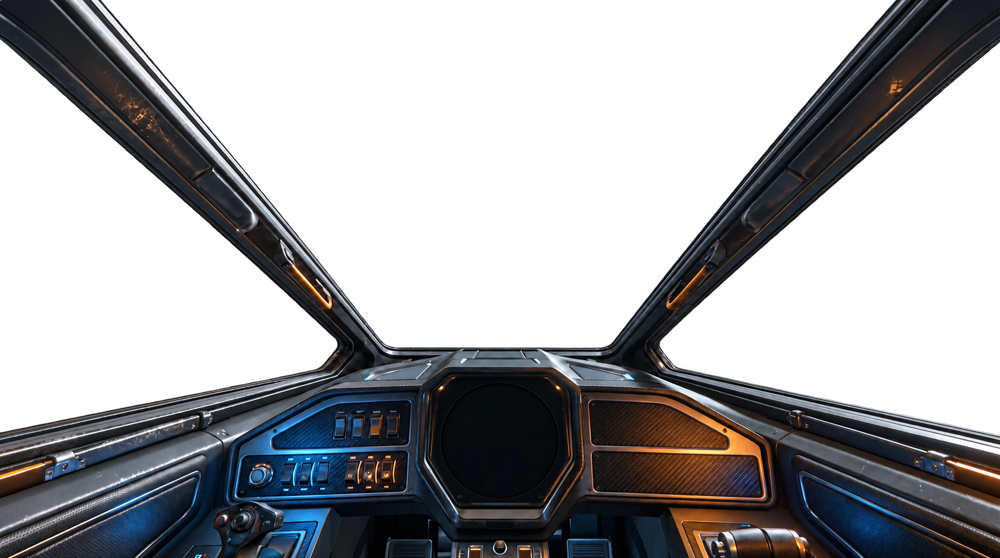

Skip to demo controls

AE / 07 NACRE ORBIT KEPLER SYSTEM
INERTIAL REFERENCE / LOCAL072HDG
FLIGHT DIRECTORORBITAL CRUISEKepler relay · holding vector▂▄▆█ LINK STABLE
01 / VEHICLE STATUSAEGIS / R06
SHIELD100PERCENT
✓ LIFE SUPPORT✓ GEAR RETRACTED
Redistribute the available power. Engine allocation affects simulated speed; shield allocation affects heat.
02 / SENSOR ARRAYRANGE 32 KM
SELECT A CONTACTChoose a marker or a contact from the sensor list.
AWAITING TARGET
POWER DISTRIBUTIONBUS VOLTAGE 28.4 V
COUNTERMEASURESDEFENSIVE SYSTEMS READY
AETHER OS 0.1 / DESIGN PROTOTYPELIVE SVG + CANVAS / SIMULATION